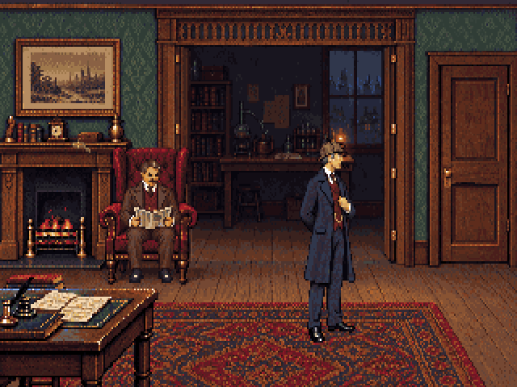

A warmer front room, a walnut opening, and a dimmer chemistry room beyond. The landing falls into shadow too. Same fixed camera and approved character masters. The room images below are filtered to 320×200 and the fixed 64-colour palette, then enlarged without smoothing.

320×200 with 1.2 pixel aspect. Review study; not yet registered in the game. Standing-sprite scale proofs are not walking animations.
Sources and implementation